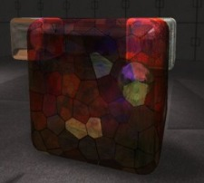
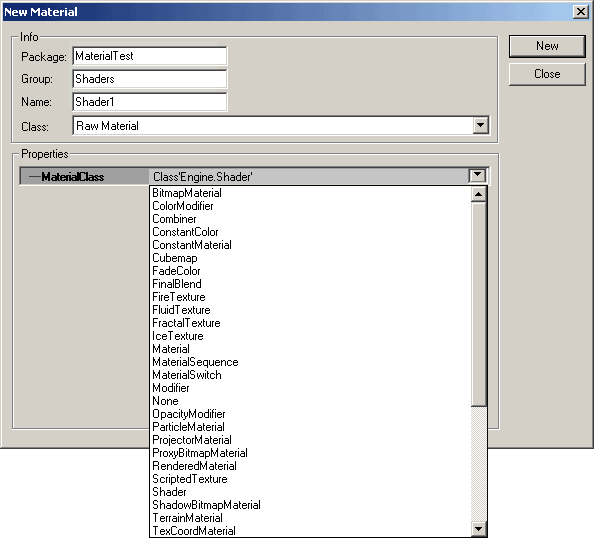
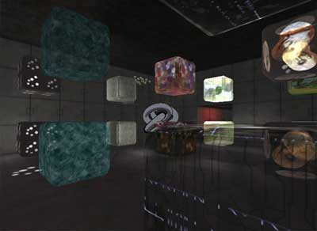

UDN
Search public documentation:
MaterialTutorial
日本語訳
한국어
Interested in the Unreal Engine?
Visit the Unreal Technology site.
Looking for jobs and company info?
Check out the Epic games site.
Questions about support via UDN?
Contact the UDN Staff
한국어
Interested in the Unreal Engine?
Visit the Unreal Technology site.
Looking for jobs and company info?
Check out the Epic games site.
Questions about support via UDN?
Contact the UDN Staff
Materials
Document Summary: An introduction to the Material Browser and table of contents to the different Shaders. Document Changelog: Last updated by Jason Lentz (DemiurgeStudios?), to separate into more manageable docs. Original author was Lode Vandevenne (UdnStaff).Introduction
Materials allow for all sorts of special effects through modifying textures. This doc is a guide on how to use the different material classes and create various effects using Materials. While at first glance Materials may seem unwieldy and confusing, the can be very powerful tools once you know how to use them.

Below is a description on how to use the Material Properties and links to more in depth descriptions of the various types of Materials available.Using the Material Browser
To bring up the Material Properties, right click on any texture in the Texture Browser and select the properties option. You should see something like this (the various sections are described below): 1 -Material Window- This is displays the selected material in the Material.
2 -Material Tree- This displays the entire tree of Materials. You can select the various Materials in the tree to see their own properties.
3 -Material Display Buttons- These buttons change the display in the Material Window. The button has no effect.
This button,
1 -Material Window- This is displays the selected material in the Material.
2 -Material Tree- This displays the entire tree of Materials. You can select the various Materials in the tree to see their own properties.
3 -Material Display Buttons- These buttons change the display in the Material Window. The button has no effect.
This button,  The
The 
 4 -Properties- Here you find a text version of the Material Tree where you can alter the individual properties of each Material in the tree. Note that depending on what Material you have selected in the Material Tree window, properties available to change may vary.
4 -Properties- Here you find a text version of the Material Tree where you can alter the individual properties of each Material in the tree. Note that depending on what Material you have selected in the Material Tree window, properties available to change may vary.
Creating a New Material
To create a new Material go back to the Texture Browser and from the File menu select "New." You will see a "New Material" window come up. In this window you will need to set the appropriate package, group, and name as well as determine what sort of Material you will create.
There are many different types of MaterialClasses you can choose from. Note that you can choose Raw Material or Real-time Procedural Texture from the "Class" menu, but you will want to leave this set to Raw Material. The next section outlines the various types of MaterialClasses and links to documents that describe each of the types in greater detail.Raw Material Class
As for the Raw Material class, which is what you will be using most of the time, there are many more sub classes to choose from. These sub classes are separated into five different categories for clarification only (outlined below). Note that many of the subclasses are not included because they are either no longer functional or they are not intended to be used by level designers. Unreal Ed also separates different Materials into classes and distinguishes between these classes in the Texture Browser. Here are some different kinds of materials grouped together in the Texture Browser: In the menu Filter you can choose to view only certain types of materials for a better overview.
Not all of the Raw Material classes have colored borders, but here is a brief description of the ones that do:
In the menu Filter you can choose to view only certain types of materials for a better overview.
Not all of the Raw Material classes have colored borders, but here is a brief description of the ones that do:
| Raw Material Class | Description | Border |
|---|---|---|
| Texture | These are normal Textures with nothing special, or Procedural Textures. All the other materials use normal textures as a base from which to build. | None |
| Shaders | These can add effects such as Opacity, Specularity, SelfIllumination among others to a texture. | |
| Modifiers | These materials apply specific modifications to other materials or textures. For example, the TexRotate Material rotates a texture and the TexScaler changes the scale of a texture. | |
| CubeMaps | These take six textures and apply them in an array so as to texture cubes in a specific manner. These can be used to create EnvironmentMaps. | |
| Combiners | These materials combine two other materials together in a way you choose. | |
| FinalBlends | These add simple effects to your resultant Material or Texture including translucency, darkening, and alpha blending | |
Shaders
MaterialsShaders These are the most commonly used Material classes. In this document, the Shader Material class is described. With Shaders you can use different textures together to achieve some simple effects.Modifier
MaterialsModifiers These Material classes perform specific modifications to the textures and allow for non-standard modifications to your base texture. The subclasses described in this document are the ColorModifier, ConstantColor, TexEnvMap, TexOscillator, TexPanner, TexRotator, and TexScaler.Combiner
MaterialsCombiners The Combiner Material class is good for taking two other materials and combining them to produce a third. With Combiners, very complex Material Trees can be created to intricate layered effects.CubeMaps and TexEnvMaps
MaterialsEnvironmentMaps Here you will see how to create Environment Maps using the CubeMap and TexEnvMap Material classes.FinalBlend
MaterialsFinalBlend The FinalBlend Material applies a blending effect to a texture. This linked to document describes how to use this Material subclass.Example Map

For an example map that shows many different complex Materials in action, take a look at this document: ExampleMapsEPIC#Materials_Example_Map (The example map is at the bottom of the page)